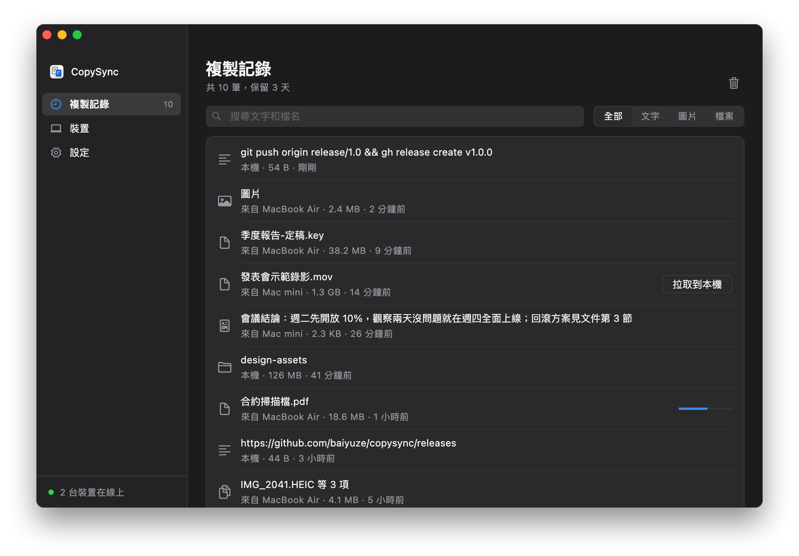

在這台電腦複製，
到那台電腦貼上。
Mac、Windows、Linux 互通，文字、圖片、檔案、整個資料夾都可以，不要求同一個帳號。現在啟用官方服務就能跨網路同步，無需自行架設伺服器。優先直連，始終端到端加密。
版本 2.1.0，免費開源。macOS 13 以上；Windows 10、11；Linux（x64 與 ARM64）。
第一次用？看快速入門，三個步驟就設定好 →兩台電腦怎麼連起來
同一網路裡裝好就能配對；不同網路裡，啟用官方服務即可，無需自建。也保留自建伺服器與 Tailscale，依需求選擇。
官方服務
開啟一個開關，讓家裡與公司的電腦找到彼此。優先打洞直連，失敗後自動中繼，不需購買雲端主機或填寫位址。
啟用官方服務 → 什麼都不用架設同一網路
家裡或辦公室，連著同一台路由器。兩台電腦裝好 App，輸入配對碼就能同步，不需要伺服器，也不需要一直開著的電腦。
同一網路教學 → 自行管理容量與部署自建公網伺服器
一台有公用 IP 的 Linux 雲端主機，最低規格就夠了。每台電腦直接連到它，在家、在公司、在外面都能用，不必另外安裝軟體。
雲端伺服器架設教學 → 跨網路，不用伺服器Tailscale
每台電腦裝上 Tailscale、登入同一個帳號，配對時輸入對方的 Tailscale 位址。在家、在公司都能同步，不需要伺服器，也不需要一直開著的電腦。
Tailscale 教學 →第一次用？跟著快速開始。官方服務為選用，目前預設每日 100 MB 中繼額度，直連不扣此額度。
所有裝置上複製過的，都在這裡
複製記錄保留最近 3 天的內容，隨時可以放回剪貼簿，圖片點一下就能預覽。50 MB 以內的檔案在你複製的時候就已經傳好了，更大的檔案等需要時再點一下拉取。想找以前複製過的，用文字內容或檔名搜尋一下就有。

按下複製之後
文字、圖片、檔案、整個資料夾，都走同一條路。
偵測
在 Mac 上，背景服務每隔一小段時間查看一次剪貼簿的變更計數，只看計數和類型，不需要授權，也不會跳出系統提示；在 Windows 上，複製的那一刻系統就會通知它。
傳輸
文字隨訊息一起送出；50 MB 以內的圖片和檔案打包成串流立即推送；更大的檔案只送出一筆記錄，等你需要時再傳。
貼上
另一台電腦先把內容存到本機，再寫入剪貼簿。按下 ⌘V 或 Ctrl+V 貼上的，就是本機上真正的檔案。
為什麼不用現有的方法
通用剪貼板要同一個 Apple ID、距離夠近；AirDrop 每次都要點接受；傳給自己要手動下載，檔案還留在別人的伺服器上。一台 Mac 加一台 Windows 時，系統內建的方法一個都用不了。
| 隔空貼 | 通用剪貼板 | AirDrop | 聊天軟體 | |
|---|---|---|---|---|
| 不同 Apple ID 之間 | 可以 | 不行 | 要對方接受 | 可以 |
| Mac 與 Windows 之間 | 可以 | 不行 | 不行 | 可以 |
| 不在同一個網路（家裡和公司） | 可以 | 不行 | 不行 | 可以 |
| 複製後直接貼上，不用點接受 | 可以 | 可以 | 不行 | 不行 |
| 檔案與整個資料夾 | 可以 | 不穩定 | 可以 | 要先壓縮 |
| 找回之前複製過的內容 | 可以 | 不行 | 不行 | 翻聊天記錄 |
| 僅自己的裝置可解密內容 | 可以 | 可以 | 可以 | 依軟體而定 |
運作原理
同一網路裡，裝置不需伺服器就能找到彼此；跨網路時，官方服務或自建伺服器協助交換連線資訊。優先打洞直連，失敗後才使用加密中繼。下圖展示通用的信令與中繼結構。
- WebRTC 直連，DTLS 加密 資料只在兩台電腦之間傳輸
- 信令與中繼服務 信令、STUN、TURN 中繼
- 中繼：只在直連打不通時
公司網路也能直連
公司雙線路、電信業者位址池這類網路有多個出口，會依目的位址決定走哪一個。只偵測一次，只會知道其中一個出口，結果只能經伺服器中繼。隔空貼會偵測每個出口，把位址全部告訴對方。
做了什麼
- 共用一個連接埠。所有連線都從同一個本機 UDP 連接埠收發，向不同伺服器查到的位址才對得上。
- 偵測每個出口。在這個連接埠上同時詢問 7 台 IP 分散的伺服器，網路有幾個出口就拿到幾個位址；遭 DNS 汙染的位址會先過濾掉。
- 全部告訴對方。對方逐一嘗試，與實際出口相符的那一個就能打通。
- 記住見過的出口。某次漏掉的出口，如果它不會改變連接埠，就用「出口 IP + 本機連接埠」推算補上。
- 講好誰先送封包。有些路由器收到對方先到的封包，會把連接埠佔住。一方先公布出口位址，另一方先往那邊送封包，再公布自己的；重試時兩種順序輪流使用。
- 閒置時重試直連。直連失敗且中繼可用時，先透過中繼保持同步。連線閒置時可重試打洞，成功後切回直連並釋放中繼。
用真實的網路拓撲驗證
NAT 打洞實驗室用 Linux 網路命名空間與 iptables 搭出這些拓撲，用隔空貼真正的連線程式碼各跑一遍，每次提交程式碼都會自動執行。
| 情境 | 結果 |
|---|---|
| 單一出口 ↔ 家用路由器 | 直連 |
| 兩個出口，舊版本（對照） | 中繼 |
| 兩個出口 ↔ 家用路由器 | 直連 |
| 四個出口 ↔ 家用路由器 | 直連 |
| 兩個出口，第二條線路沒偵測到，沒有歷史記錄 | 中繼 |
| 兩個出口，第二條線路沒偵測到，有歷史記錄 | 直連 |
| 兩個出口 ↔ 兩個出口 | 直連 |
| 兩個出口 ↔ 連接埠隨機分配的 NAT | 中繼 |
| 一開始打不通，之後網路恢復 | 先中繼，隨後直連 |
| 公司路由器會為外來的封包佔住連接埠 | 直連 |
| 家用路由器會為外來的封包佔住連接埠 | 先中繼，重試一次後直連 |
| 沒有伺服器，同一個網段，靠 mDNS 探索 | 直連 |
| 沒有伺服器，兩個網段，一邊記得對方位址 | 直連 |
| 沒有伺服器，兩台都擋外來連線，都記得位址 | 直連 |
| 沒有伺服器，兩台都擋外來連線，只有一邊記得 | 連不上（已知限制） |
| 沒有伺服器，兩個網段之間被隔離 | 連不上 |
實測：一台在 4 個出口的公司網路裡的 Mac 與家裡的 Mac，改良前只能中繼，速度被伺服器頻寬限制在 0.6 MB/s；改良後可以直連，連上伺服器後約 3 秒就建立連線。
量測過程、設計取捨與踩過的坑，請見技術說明。
伺服器看不到你複製了什麼
- 伺服器不存帳號，也不存內容。裝置身分是一把 Ed25519 金鑰，裝置 ID 由公鑰算出，伺服器不需要使用者資料表就能驗證身分。
- 配對時由你核對安全指紋。兩邊的螢幕會顯示同樣的兩行：雙方各自公鑰的指紋。伺服器有能力替換轉送中的公鑰，但一旦替換，兩邊螢幕上的指紋就對不上了，這一步就是防範中間人攻擊的關卡。
- 之後的每則訊息都帶有簽章，伺服器無法冒充你的裝置。直連通道的憑證在交握後還會再核對一次，不一致就立即中斷。
- 中繼也只是轉送密文。TURN 轉送的是加密後的封包，中繼憑證按裝置個別簽發，12 小時後過期。
- 區域網路裡也一樣。裝置在區域網路裡廣播的只是一個每天都會變的匿名識別碼，看不出是誰的電腦，只有開啟「搜尋附近裝置」時才會帶上裝置名稱；配對同樣要核對指紋，之後的訊息同樣帶有簽章。

出問題的時候會怎樣
每個人的網路環境都不一樣。下面這些情況都考慮過，也都有對應的測試。
- 在同一個網路裡找不到對方
- 不同網段、訪客網路、開了 AP 隔離的 Wi‑Fi，都會擋住區域網路探索。配對時輸入對方配對碼下方顯示的位址就行；之後位址會被記住，兩邊都換了位址時，在裝置清單裡幫它重新輸入一次。
- 系統擋住區域網路連線
- 從 macOS 15 起，背景服務要連線區域網路裡的裝置，需要你允許；Windows 第一次執行時，防火牆會跳出詢問。沒有允許時，App 會提示，並提供直達設定的按鈕。
- 兩台電腦打不通直連
- 官方模式在直連失敗後，依目前額度申請中繼；自建模式使用自己的 TURN 中繼。兩種方式的內容均保持端到端加密。
- 連不上公共 STUN 伺服器
- 在中國大陸連公共 STUN 時通時斷。伺服器內建 STUN，用戶端會優先使用它。
- 從中繼切回直連
- 直連失敗且中繼可用時，先透過中繼保持同步。連線閒置時可重試打洞，成功後切回直連並釋放中繼。
- 對方睡眠、斷線或重新開機
- 連線悄悄斷了也能察覺，會立即關閉並重新連線。這段期間複製的內容會先記下來，連上後補送到對方的複製記錄裡，但不會覆蓋對方當下剪貼簿裡的內容。
- 伺服器斷線
- 自動重新連線，間隔從 1 秒開始加倍、最長 30 秒，並加上隨機抖動，避免一大群裝置同時重連。同一個網路裡的裝置不受影響，照常同步。
- 檔案太大
- 超過上限的只同步一筆記錄，需要時再拉取。拉取時如果原始檔案已經被刪除，會明確告訴你，而不是莫名其妙地失敗。
- 貼到只接受純文字的地方
- 從網頁複製的帶格式文字，會同時寫入 HTML 和純文字兩份，貼到哪裡都不會冒出標籤。
- 檔名在 Windows 上不合法
- Mac 上可以用的冒號、問號等字元，收到時會換成對應的全形字元，檔名照樣看得懂；只差在大小寫的兩個檔案也不會互相覆蓋。
- 複製的是密碼
- 在 Windows 上，密碼管理工具複製的內容會帶一個「不要記錄」的標記，隔空貼看到就跳過：不同步，也不會進入複製記錄。
- 還沒授權讀取剪貼簿
- 不去讀取內容，否則背景程序會卡在一個看不見的系統對話框上。App 裡會提示你去授權，並提供直達設定的按鈕。
- 背景服務當掉
- Mac 上由系統的 launchd、Windows 上由隔空貼內建的守護程式自動重新啟動，每次至少間隔 10 秒，不會無限重啟。
- 更新了 App，或把它搬到別的位置
- 打開 App 時會自動修正登入項目，並把背景服務重新啟動到新版本。
安裝
每台電腦裝一個 App。在同一個網路裡裝好就能配對；跨網路時，再選一種方式讓兩台電腦找到彼此。第一次安裝可以跟著快速入門做。
Mac
- 下載 DMG，打開後把隔空貼拖進「應用程式」。Apple 晶片與 Intel 晶片各有一個版本，下載頁會告訴你怎麼查自己的 Mac 是哪一種。
- 從「應用程式」裡打開。第一次會提示「無法驗證開發者」：隔空貼還沒有經過 Apple 公證。到「系統設定 → 隱私權與安全性」，點頁面下方的「強制打開」，只需要這一次。
- 點「啟用背景同步」。系統詢問是否允許讀取剪貼簿、是否允許尋找區域網路上的裝置時，都選擇允許。
- 跨網路時，在每台電腦的「設定」中開啟「使用官方服務」，無需填寫伺服器位址；也可以繼續自建。
Windows
- 執行 PasteFerry-Setup.exe。它會安裝在目前使用者的目錄下，不需要系統管理員權限。隔空貼還沒有程式碼簽章，Windows 會提示「Windows 已保護您的電腦」：點「其他資訊」，再點「仍要執行」。不想執行安裝程式的話，可以下載免安裝版。
- 打開隔空貼，點「啟用背景同步」。關掉視窗後，它會在右下角的通知區域繼續執行。防火牆詢問時選擇允許。
- 跨網路時，在每台電腦的「設定」中開啟「使用官方服務」，無需填寫伺服器位址；也可以繼續自建。
Linux
- Ubuntu、Debian 等發行版下載 .deb，執行
sudo apt install ./PasteFerry-linux-amd64.deb；其他發行版下載 tar.gz，解壓縮後執行./PasteFerry/install.sh。 - 從應用程式選單打開隔空貼，點「啟用背景同步」。之後它會在登入時自動啟動。
- 跨網路時，在每台電腦的「設定」中開啟「使用官方服務」，無需填寫伺服器位址；也可以繼續自建。
一台產生配對碼，另一台輸入；核對兩邊的安全指紋後確認。原有配對關係可繼續使用。 官方服務無需填寫對方 IP；僅區域網路跨網段或 Tailscale 配對時填寫對方位址。
技術規格
| 版本 | 2.1.0，發布 |
|---|---|
| Mac 用戶端 | macOS 13 Ventura 以上；Apple 晶片與 Intel 晶片各有一個安裝檔，約 25 MB，不需要 Rosetta；也有兩種晶片通用的版本，約 47 MB |
| Windows 用戶端 | Windows 10 與 Windows 11，x64；只為目前使用者安裝，不需要系統管理員權限；安裝檔約 23 MB |
| Linux 用戶端 | x64 與 ARM64；.deb（Debian、Ubuntu 等）或 tar.gz（其他發行版），約 22 MB；需要 X11 桌面，或附有 XWayland 的 Wayland 桌面（GNOME、KDE 等預設都有）；GTK 3 |
| 伺服器 | 僅自建時需要部署；使用官方服務不需自備伺服器。自建支援 Linux x86_64/ARM64、macOS 與 Windows 10/11 x64。 |
| 介面語言 | 簡體中文、繁體中文（台灣、香港）、English、日本語，預設跟隨系統，可在設定裡切換 |
| 同步的內容 | 純文字、帶格式的文字、圖片與螢幕截圖、檔案、資料夾，可依類型個別關閉 |
| 傳輸 | WebRTC 資料通道，優先直連，打不通時經 TURN 中繼；同一個網路裡透過 mDNS 探索、UDP 8788 交換連線資訊；多出口網路逐一偵測每個出口；檔案以 tar + zstd 串流打包 |
| 加密與身分 | DTLS 端對端加密；裝置身分為 Ed25519 金鑰；信令訊息逐則簽章 |
| 配對 | 6 碼配對碼，5 分鐘內有效，字元集去掉了 0/O、1/I 等容易混淆的字元；配對時人工核對安全指紋 |
| 自動同步上限 | 預設 50 MB，可在 1 MB 到 1 GB 之間調整 |
| 記錄保留 | 預設 3 天，可在 1 小時到 30 天之間調整，到期自動清除 |
| 實測速度 | 區域網路直連傳輸 20 MB 檔案約 330 毫秒，檢查碼一致 |
| 技術堆疊 | 背景服務與伺服器用 Go（Windows 上以純 Go 呼叫 Win32，Linux 上以純 Go 走 X11 協定），介面用 Flutter（三個系統共用一套程式碼），訊息定義用 Protocol Buffers |
| 授權 | GNU AGPL-3.0 |
常見問題
開著 UU 遠端時，為什麼一直出現 .uuremote_ 檔案？
UU 遠端會在系統剪貼簿裡寫入暫時的佔位檔案，舊版隔空貼把它們當成一般檔案，反覆記錄和轉送。1.3.2 在傳送和接收時會過濾已確認的佔位檔名，啟動時清除只含佔位檔案的記錄。正常的空檔案、隱藏檔案和大檔案不受這條規則影響。50 MB 只決定是否自動傳輸，與 UU 的 UDP P2P 設定無關。建議兩端都更新；其他軟體如果也會同步剪貼簿，仍可能產生一般內容的重複記錄。
和 macOS 內建的「通用剪貼板」有什麼不同？
Mac、Windows、Linux 互通，文字、圖片、檔案、整個資料夾都可以，不要求同一個帳號。現在啟用官方服務就能跨網路同步，無需自行架設伺服器。優先直連，始終端到端加密。
如果你的兩台 Mac 用同一個 Apple ID、總是放在一起、主要複製文字，系統內建的功能就夠用了。
伺服器會看到我複製的內容嗎？
伺服器無法解密複製內容：直連時內容不經過中繼伺服器；中繼時轉送端到端加密封包。官方服務保留必要裝置與用量統計，詳見隱私說明。原始碼可供稽核，不代表能證明私有正式環境的儲存行為。
公司網路（雙線路、多出口）能直連嗎？
可以。這類網路依目的位址選擇出口，隔空貼會在同一個連接埠上向多台伺服器偵測，拿到每個出口的位址後一起傳給對方，由對方逐一嘗試。實測公司的 4 個出口與家用寬頻之間可以直連。對方是連接埠隨機分配的 NAT 時，仍會走中繼。
一定要自己準備伺服器嗎？
家裡沒有公用 IP，能在家和公司之間同步嗎？
在同一個網路裡，為什麼找不到另一台？
先確認兩台是不是真的在同一個網段：公司裡的有線和無線、訪客網路、開了「AP 隔離」的 Wi‑Fi 常常互不相通，區域網路探索過不去。這時在輸入配對碼的那台點「不在同一網段？」，填上另一台配對碼下方顯示的位址。
在 Windows 上，第一次執行時防火牆會詢問，要選擇允許；如果按過取消，到「設定 → 區域網路」裡點「允許」。在 Mac 上，要到「系統設定 → 隱私權與安全性 → 本機網路」裡開啟 PasteFerry Daemon。更多說明見同一網路教學。
支援 Windows 和 Linux 嗎？iPhone 呢？
支援 Windows 10 與 Windows 11（x64），與 Mac 互通。複製的檔案在 Windows 上貼上後就是真正的檔案，能直接貼進檔案總管、WeChat、Office。
也支援 x64 與 ARM64 的 Linux 桌面：X11，或附有 XWayland 的 Wayland 桌面（GNOME、KDE 等預設都有）。複製的檔案能直接貼進檔案管理員。
暫不支援 iPhone 和 iPad：iOS 不允許 App 在背景監聽剪貼簿，做不到複製後立即同步。
為什麼第一次打開時系統會擋一下？
隔空貼還沒有經過 Apple 公證，Windows 版也還沒有程式碼簽章，兩者都需要每年付費購買的憑證。
在 Mac 上，到「系統設定 → 隱私權與安全性」，點頁面下方的「強制打開」；在 Windows 上，在「Windows 已保護您的電腦」提示裡點「其他資訊」，再點「仍要執行」。都只需要這一次。
大檔案怎麼處理？
預設 50 MB 以內的內容，在你複製時就推送到另一台電腦，那邊可以直接貼上；更大的檔案只同步一筆記錄，需要時在複製記錄裡點「拉取到本機」再傳。上限可以在設定裡調整。
免費嗎？公司能用嗎？
免費。隔空貼以 GNU AGPL-3.0 授權開源，個人和公司都可以免費使用和修改。散布它，或透過網路提供修改過的版本時，需要以同樣的授權公開原始碼。
官方中繼不限量嗎？
目前預設每機器額度組每日 100 MB 中繼流量，上傳與下載合計，北京時間午夜重設。重新安裝不保證獲得新額度。用量頁顯示實際額度、剩餘量與更新時間；額度用完仍可直連。額度與服務可用性可能調整，以用戶端顯示為準。
兩台電腦，一個剪貼簿。
版本 2.1.0，免費開源。macOS 13 以上；Windows 10、11；Linux（x64 與 ARM64）。
第一次用？看快速入門，三個步驟就設定好 → 在 GitHub 上檢視原始碼